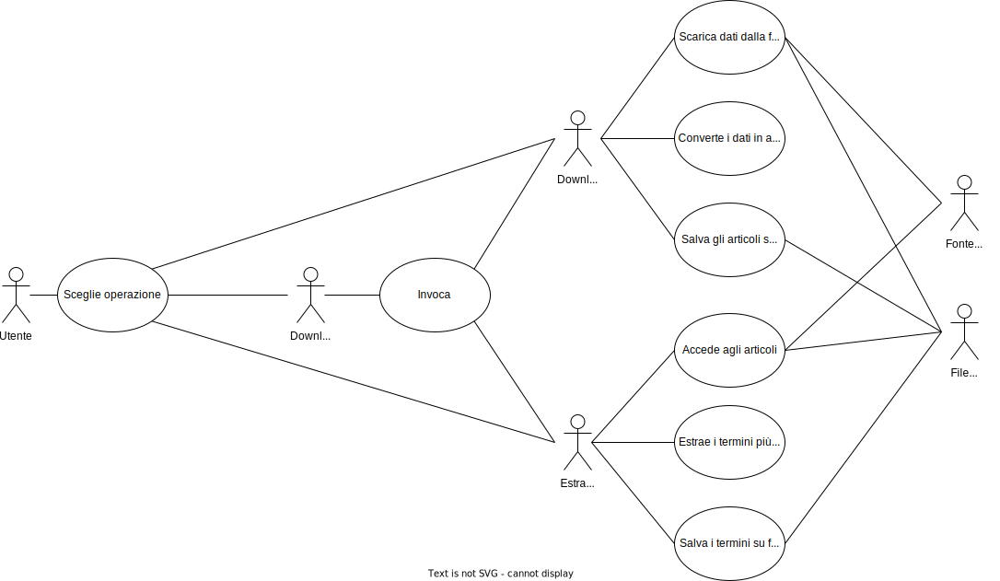

Documento dei Requisiti
Versione: 1.0
Data: 11 giugno 2023
Standard: IEEE 830-1998
Introduzione
In questo documento vengono trattati in modo approfondito i requisiti del progetto, ponendo particolare attenzione a:
- funzioni supportate
- dipendenze da interfacce software e di comunicazione
- limiti di progettazione
- casi d'uso
Scopo
Il sistema è stato creato per effettuare operazioni su articoli di giornale. L'utente finale è in grado di scaricare articoli, estrarre i termini più frequenti e visualizzare i risultati o effettuare entrambe le operazioni in sequenza.
Acronimi
- API: Application Programming Interface.
- JSON: JavaScript Object Notation.
Definizioni
- peso: numero di documenti in cui appare un termine.
- Il programma dispone i termini estratti nel file di testo in ordine alfabetico come criterio aggiuntivo.
- formato del file JSON di download:
[
{
"id": "int",
"title": "string",
"body": "string",
"date": "date",
"url": "string",
"source": "string"
},
...
]
- formato del file di testo di estrazione:
termine: peso
Descrizione generale
In questa sezione si affronta in modo estensivo la descrizione di:
- Funzioni supportate
- Caratteristiche dell'utente
- Compatibilità
Prospettiva del prodotto
Questo è un sistema creato per un progetto universitario, quindi non è destinato ad un uso commerciale.
Funzioni supportate
Il programma, al momento, supporta le seguenti funzioni:
- download degli articoli
- estrazione dei termini più ricorrenti in un file di testo
- download ed estrazione in sequenza
Sono possibili le seguenti specificazioni:
- una fonte
- un filtro temporale / una query di ricerca
- un numero massimo di articoli da scaricare
- un numero massimo di termini da estrarre
- nome file di output articoli
- nome del file di output termini
- estrarre lemmi o solo parole senza punteggiatura
Download
Il programma scarica articoli da testate giornalistiche tramite le fonti supportate, salvandoli in un formato comune.
Richiesta
Fonte e opzioni supportate:
- The Guardian API
- query di ricerca
- filtro temporale
- numero massimo di articoli
- estrazione lemmi o parole senza punteggiatura
- The New York Times CSV
- query di ricerca
- filtro temporale
- numero massimo di articoli
- estrazione lemmi o parole senza punteggiatura
- File provenienti da un download precedente
- query di ricerca
- filtro temporale
- numero massimo di articoli
- estrazione lemmi o parole senza punteggiatura
Risposta
Esito, file JSON contenente la lista degli articoli.
Estrazione
Il programma estrae in un file di testo i termini più ricorrenti da un articolo modellizzato, precedentemente scaricato.
Richiesta
File da cui estrarre i termini, opzioni supportate.
Risposta
Esito, file txt contenente i termini più ricorrenti.
Download ed estrazione
Il programma effettua in sequenza il download degli articoli e l'estrazione dei termini più ricorrenti.
Richiesta
Fonte e opzioni supportate dal download.
Risposta
Esito, file generati:
- file JSON contenente la lista degli articoli
- file di testo contenente i termini più ricorrenti
Caratteristiche dell'utente
Esiste un solo tipo di utente, ma il sistema può essere utilizzato in modo automatico da altri sistemi/programmi. Non sono stati implementati privilegi.
Compatibilità
Il sistema è supportato da tutti i sistemi operativi che supportano almeno Java 11.
Assunzioni
Si assume che l'utente:
- abbia una connessione ad internet
- sappia interfacciarsi con un terminale
Requisiti specifici
In questa sezione verranno trattati i requisiti specifici del sistema. In particolare:
- Interfacce esterne
- Requisiti funzionali
- Limiti di progettazione
- Caratteristiche del software
Requisiti Interfacce Esterne
In questa sezione verranno trattate le interfacce esterne con cui il sistema interagisce, in particolar modo:
- Interfacce software
- Interfacce di comunicazione
Interfaccia del sistema
L'interfaccia del sistema è il terminale del sistema operativo su cui viene eseguito il programma. Si può visualizzare:
- lo stato di caricamento dell'applicazione
- cosa sta eseguendo l'applicazione in real time
- eventuali errori e cosa li ha causati, con possibile risoluzione
Interfacce hardware
Il sistema ha bisogno di una connessione ad internet per funzionare, quindi fa affidamento alla scheda di rete del computer, oltre che al file system.
Interfacce software
Il sistema si interfaccia con The Guardian API tramite una chiave che l'utente deve possedere quando utilizza la funzione download del programma.
Interfacce di comunicazione
Il sistema utilizza il protocollo HTTPS.
Requisiti funzionali
- Il sistema deve poter supportare nuove sorgenti.
- Dopo la fase di download, deve essere effettuata la persistenza su file degli articoli usando lo stesso formato per tutti gli articoli di tutte le sorgenti.
- Il sistema deve poter supportare nuove modalità di memorizzazione ed accesso agli articoli.
- Per estrarre i termini ed il loro peso, è necessario partire dai file in cui gli articoli sono memorizzati.
- Il sistema deve poter supportare nuove strutture per memorizzare ed avere accesso ai termini più importanti
- L’utente deve poter specificare se eseguire solo il download, solo l’estrazione dei termini a partire dai file in cui sono stati memorizzati gli articoli, o entrambe le azioni in sequenza.
Limiti di progettazione
Il sistema deve essere predisposto ad aggiornamenti futuri.
Caratteristiche del software
In questa sezione verranno trattate le caratteristiche del software.
Aggiornabilità e manutenibilità
Il sistema è stato progettato in modo da rispettare le richieste di aggiornabilità e manutenibilità. Grazie all'utilizzo di design pattern che permettono di rendere il codice più flessibile, il sistema è predisposto a supportare nuove sorgenti, nuove modalità di memorizzazione degli articoli e nuove strutture per memorizzare i termini estratti.
Appendice
UseCases Diagram

Descrizione in linguaggio naturale strutturato
| Attori | Descrizione | |
|---|---|---|
| Utente | L'utente finale è in grado di scaricare articoli [-d], estrarre i termini più frequenti e visualizzare i risultati [-e] o effettuare entrambe le operazioni in sequenza, a seconda del comando impartito al momento dell'esecuzione | |
| Download | In base alla sorgente specificata (The Guardian API, The New York Times CSV o file provenienti da un download precedente) scarica i dati, li converte in articoli e li scrive in un file JSON | |
| Estrazione | A partire da un articolo modelizzato precedentemente scaricato, estrae i termini più ricorrenti e li salva in un file di testo file txt | |
| Download&Estrazione | Invoca sequenzialmente Download ed Extract, producendo i rispettivi output (file JSON e file txt) The Guardian API | Sorgente dalla quale vengono scaricati i dati, che saranno poi convertiti in articoli, alla quale si accede tramite una API Key |
| File System | Sorgente in cui vengono salvati articoli scaricati, e produce i file di output dei diversi use case file JSON con la lista di articoli e file txt con i termini più ricorrenti | |
| Caso d'uso | Download |
|---|---|
| Attori | |
| Opzioni supportate | |
| Stimolo | |
| Risposta | |
| Caso d'uso | Estrazione |
|---|---|
| Attori | |
| Opzioni supportate | |
| Stimolo | |
| Risposta | |
| Caso d'uso | Download&Estrazione |
|---|---|
| Attori | |
| Opzioni supportate | |
| Stimolo | |
| Risposta | |